1. СНС и кругооборот
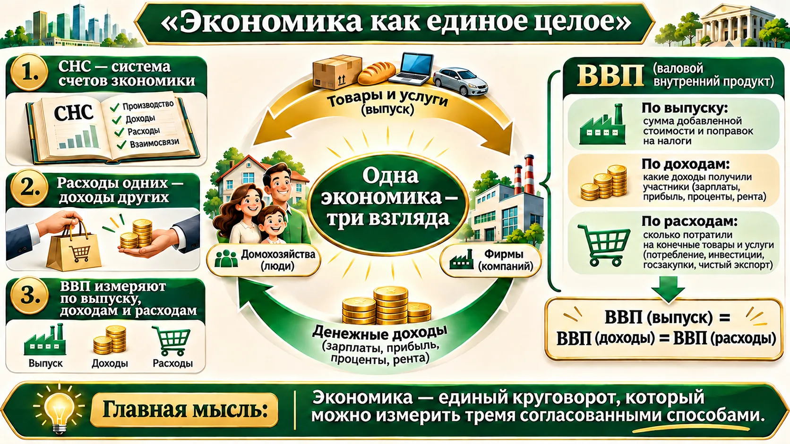
Система национальных счетов описывает экономику через связанные показатели. В кругообороте расходы покупателя становятся доходами продавца: один результат можно рассмотреть со стороны производства, доходов или расходов.
🧭 Что такое СНС?
Система национальных счетов — согласованный набор счетов, показывающих производство, доходы и расходы в экономике.
➕ Дополнение: МВФ: что измеряет ВВП.
2. ВВП и ВНД: территория и доход
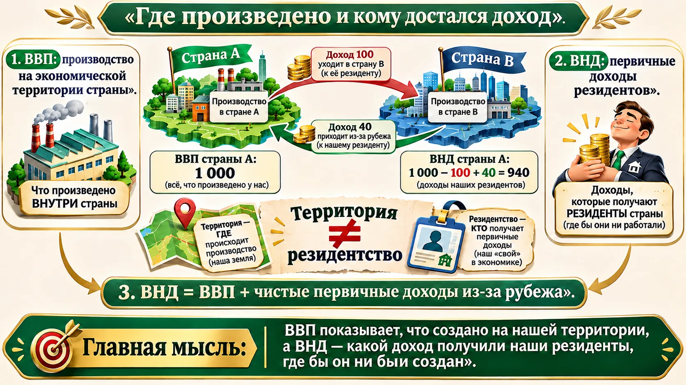
ВВП — рыночная стоимость конечных товаров и услуг, произведённых на экономической территории за период. ВНД учитывает первичные доходы резидентов: ВВП плюс чистые первичные доходы из-за рубежа. Резидентство определяется экономической связью, а не просто гражданством.
🧭 Краткая справка
Резидент — единица с центром экономических интересов в стране; это не синоним гражданства.
3. Добавленная стоимость
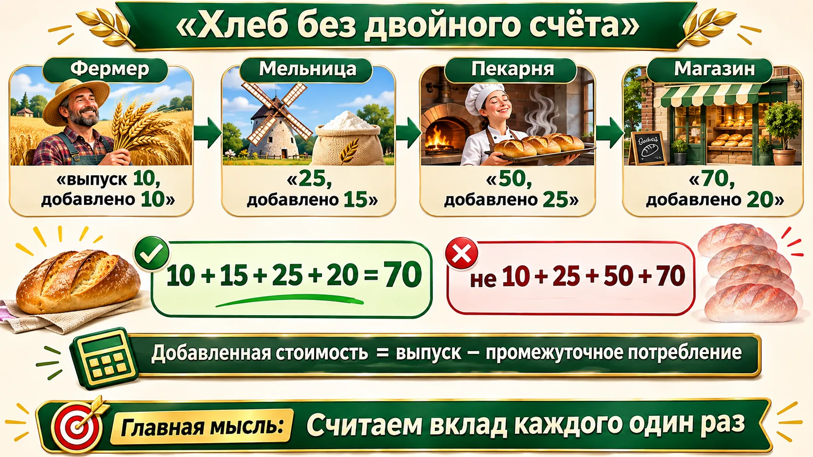
Добавленная стоимость = выпуск − промежуточное потребление. Зерно за 10, мука за 25, хлеб за 50, продажа за 70: вклады составляют 10, 15, 25 и 20; сумма равна 70.
🧭 Краткая справка
Промежуточное потребление — товары и услуги, использованные в производстве. Конечное использование включает потребление, накопление и экспорт.
4. Три способа измерить ВВП
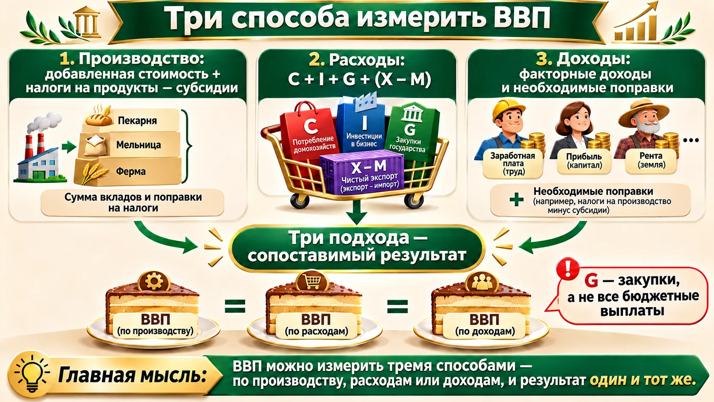
Производственный метод суммирует добавленную стоимость с необходимыми налоговыми поправками; доходный — доходы от производства; расходный — C + I + G + (X − M). Теоретически это три взгляда на один результат, на практике возможны статистические расхождения.
🧭 Краткая справка
C — потребление; I — инвестиции; G — государственные закупки; X − M — чистый экспорт. Трансферт — передача дохода без встречной покупки. Доходный метод суммирует оплату труда, прибыль, ренту и процент, а также в учебной формуле — амортизацию и косвенные налоги.
5. Номинальный и реальный ВВП
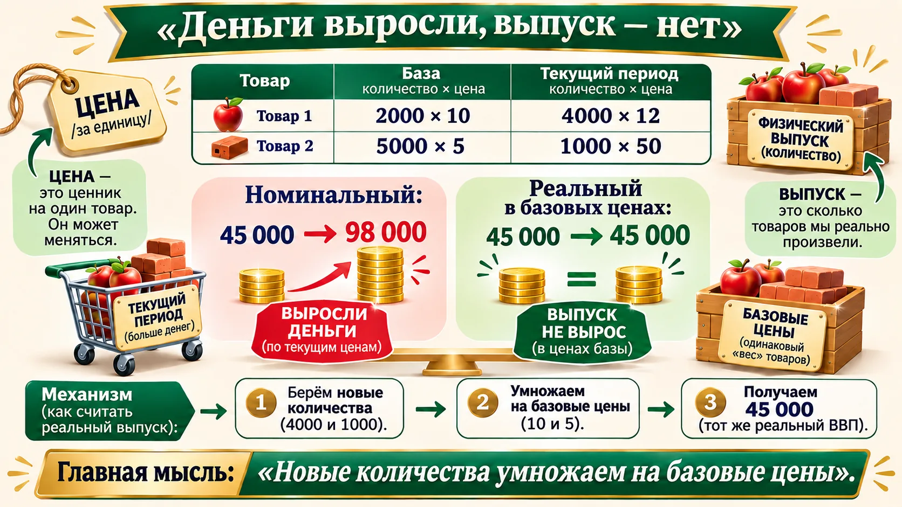
Номинальный ВВП измеряют в текущих ценах; реальный — в сопоставимых ценах. В задаче лекции номинальный ВВП вырос с 45 000 до 98 000, а реальный остался 45 000.
➕ Дополнение: рост цен и выпуска в России, 2014–2021
Исторические данные из раздаточного материала к занятию. Сравните номинальный и реальный темпы: в 2015 году номинальный ВВП вырос на 5,1%, тогда как реальный сократился на 2,0%; в 2021 году — 22,0% и 4,7% соответственно.
| Год | Номинальный ВВП | Реальный ВВП | Индекс-дефлятор, % к пред. году |
|---|---|---|---|
| 2014 | +8,3% | +0,7% | 107,5 |
| 2015 | +5,1% | −2,0% | 107,2 |
| 2020 | −2,0% | −2,7% | 100,7 |
| 2021 | +22,0% | +4,7% | 116,5 |
Темпы и дефлятор приведены по предоставленной исторической таблице, а не описывают текущую динамику. ➕ Дополнение: актуальные ряды и методические материалы — Национальные счета Росстата.
Тренажёр: два товара
Меняйте количества и цены. Все значения — неотрицательные числа.
🧭 Краткая справка
Базовый период — период, цены которого выбраны для сравнения. Рецессия — спад активности, стагнация — слабая динамика.
6. Дефлятор, ИПЦ и благосостояние
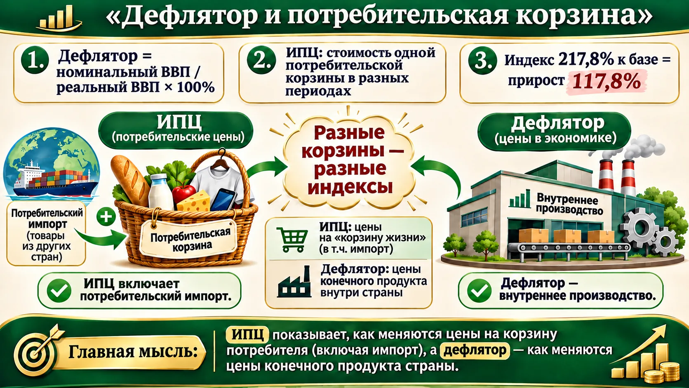
Дефлятор = номинальный ВВП / реальный ВВП × 100%. В задаче 98 000 / 45 000 × 100 ≈ 217,8% к базе: прирост ≈ 117,8%. ИПЦ отражает цены потребительской корзины, а дефлятор — цены произведённого внутри страны конечного продукта.
➕ Дополнение: BLS: сравнение ИПЦ и дефлятора ВВП.
🧭 Краткая справка
ИПЦ измеряет изменение цен потребительского набора. Индекс человеческого развития учитывает здоровье, образование и доход. ВВП на душу населения и опросные оценки счастья помогают дополнить картину, но каждый показатель отражает лишь часть благополучия.
7. Инфляция спроса и издержек
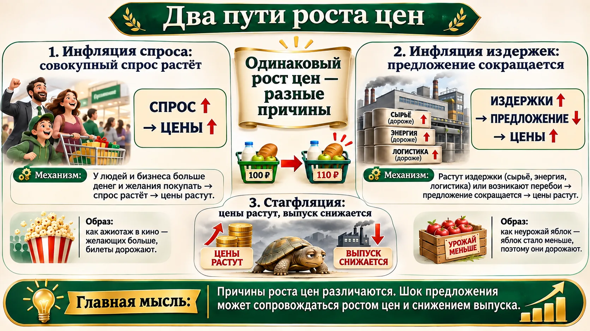
Инфляция — устойчивое повышение общего уровня цен. Разовое повышение цен называют инфляционным шоком; он может стать началом инфляции, но сам по себе ещё не доказывает устойчивого процесса. Рост совокупного спроса может поднять цены; отрицательный шок предложения может одновременно поднять цены и сократить выпуск. Стагфляция сочетает слабый выпуск и инфляцию.
Открыть тренажёр AD–AS
🧭 Краткая справка
Совокупный спрос и предложение описывают расходы и выпуск в экономике при разных уровнях цен.
8. Ожидания и подавленная инфляция
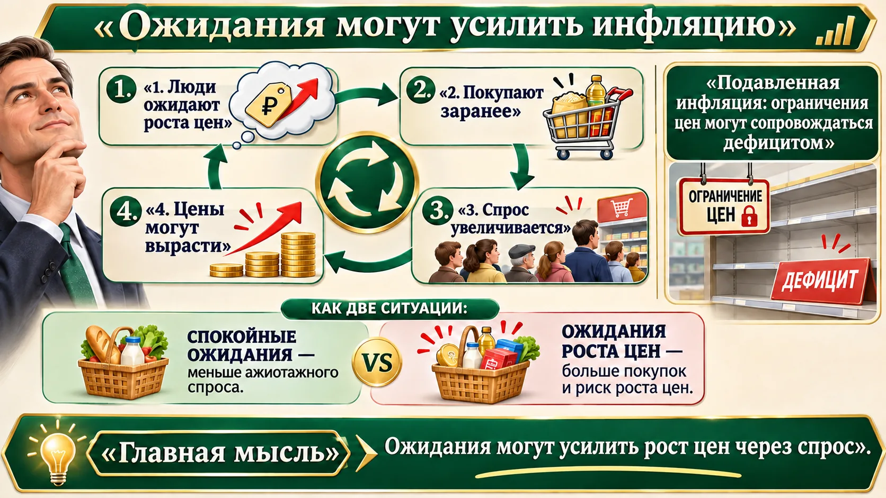
Ожидая дефицита или подорожания, люди могут покупать заранее; дополнительный спрос способен усилить рост цен. При жёстких ограничениях цен дисбаланс может проявиться в дефиците и очередях. Снижение общего уровня цен называется дефляцией; её важно отличать от замедления темпа инфляции, при котором цены продолжают расти, но медленнее.
🧭 Краткая справка
Инфляционные ожидания — представления об изменении цен в будущем. Дефляция — устойчивое снижение общего уровня цен.
9. Реальная доходность
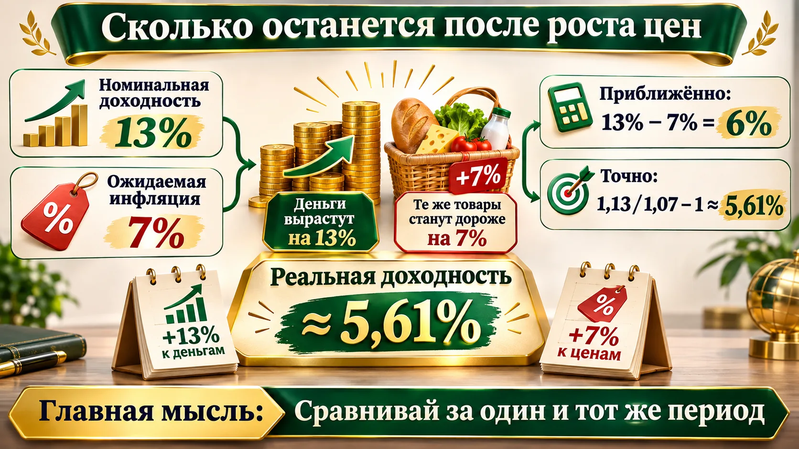
Точная реальная доходность = (1 + номинальная ставка) / (1 + инфляция) − 1. При ставке 13% и инфляции 7% получается около 5,61%; разница 6% — приближение. Неожиданная инфляция снижает покупательную способность фиксированных доходов и может быть выгодна должнику за счёт кредитора; заранее ожидаемую инфляцию стороны могут учесть в ставке и договоре. Частая смена цен создаёт для фирм издержки меню — затраты на обновление прайс-листов, ценников и расчётов.
Открыть тренажёр реальной доходности
🧭 Краткая справка
Номинальная доходность показывает изменение суммы денег; реальная — изменение покупательной способности.
10. Как измеряют безработицу
Рабочая сила = занятые + безработные. Уровень безработицы = число безработных / рабочая сила × 100%. По МОТ человек должен не иметь работы, искать её и быть готовым приступить; регистрация в службе занятости не обязательна.
Калькулятор безработицы
➕ Дополнение: МОТ: рабочая сила и критерии безработицы.
🧭 Краткая справка
Рабочая сила включает занятых и безработных по выбранной методологии.
11. Почему люди не работают
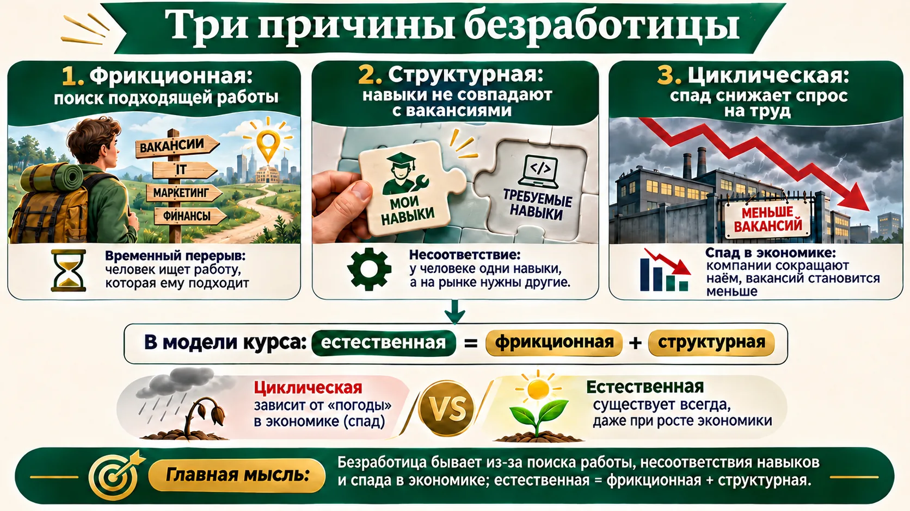
Фрикционная безработица связана с поиском подходящей работы; структурная — с несовпадением навыков и вакансий; циклическая — со спадом спроса на труд. В учебной модели естественная безработица включает фрикционную и структурную.
🧭 Краткая справка
Фрикционная связана с поиском, структурная — с несовпадением навыков и вакансий, циклическая — со спадом спроса на труд.
Что выучить к аттестации
Квиз с разбором
Шпаргалка
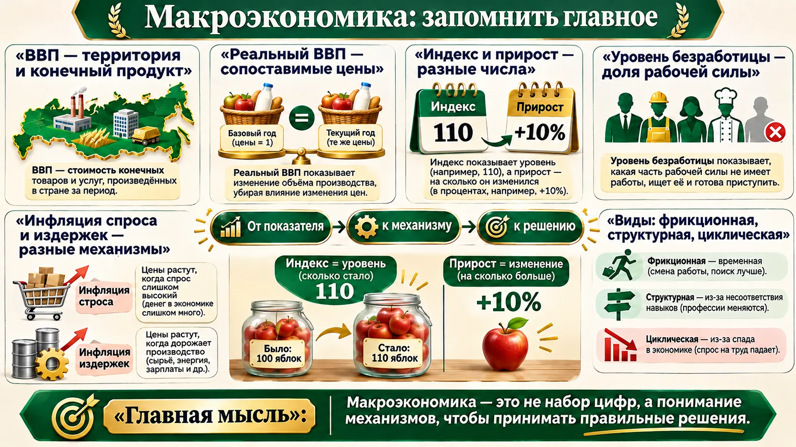
ВВП = C + I + G + (X − M)
Дефлятор = номинальный / реальный ВВП × 100%
Безработица = безработные / рабочая сила × 100%